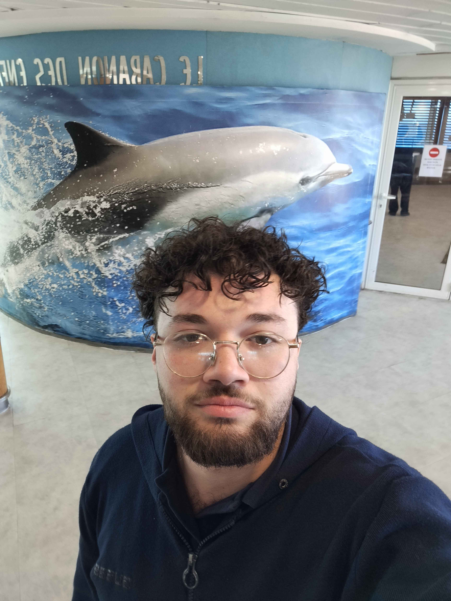
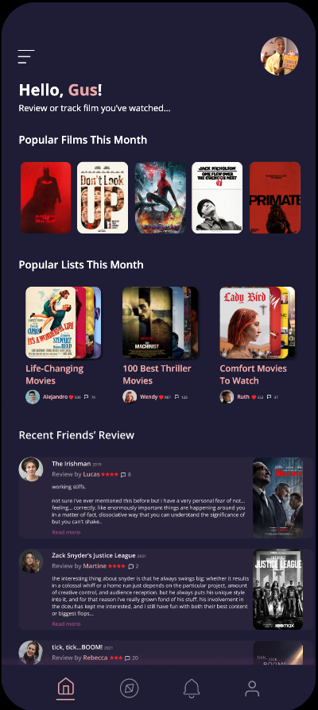
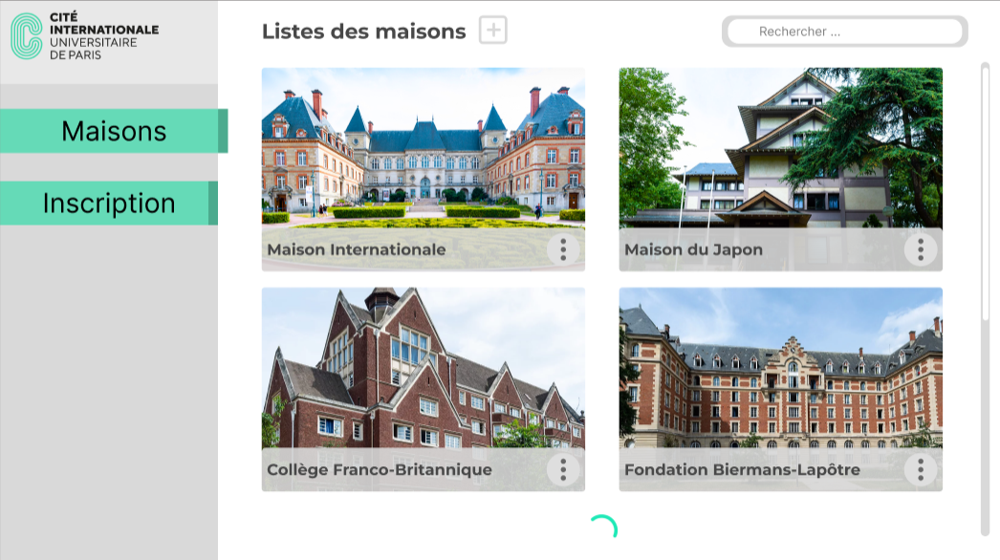
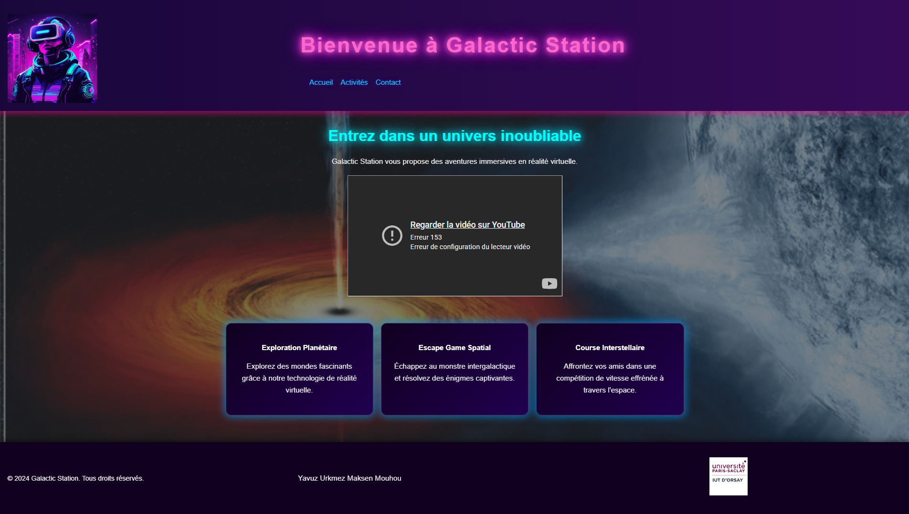
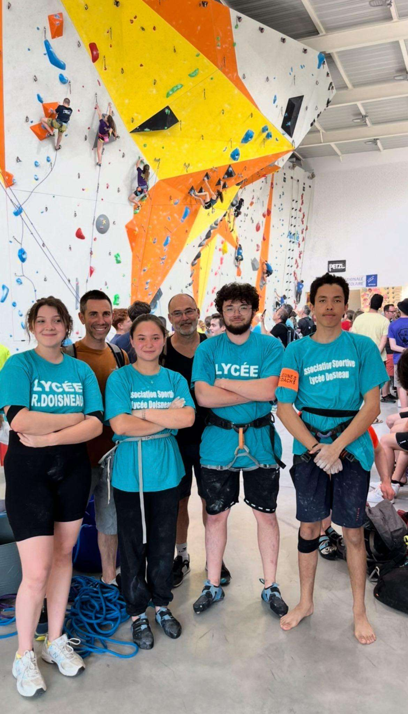
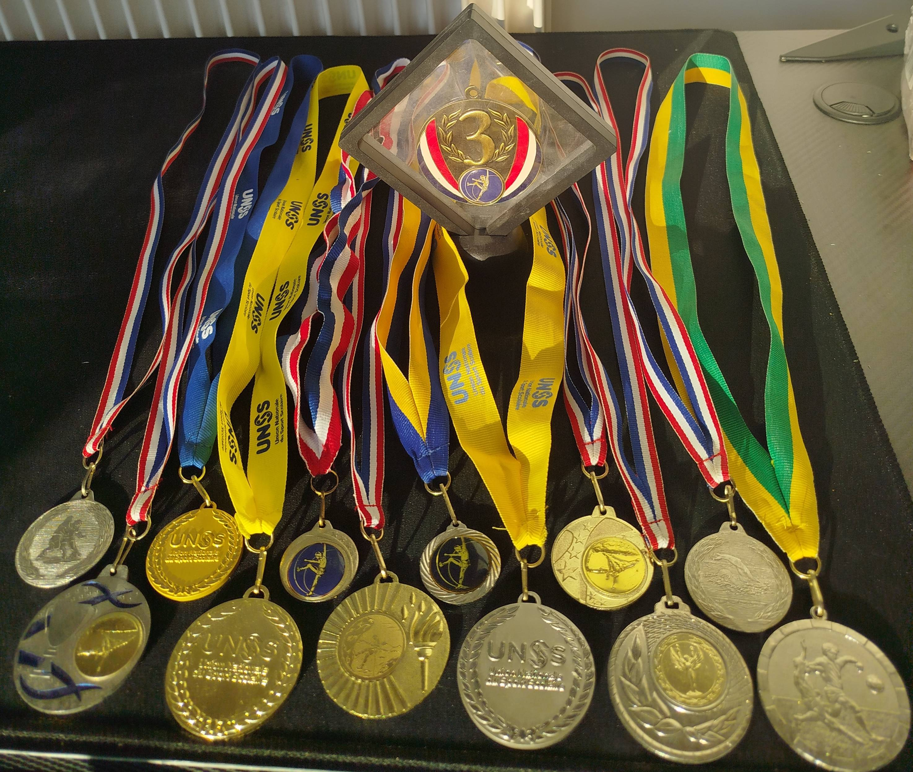

Maksen Mouhou
Étudiant en BUT Informatique - IUT d'Orsay
maksenmouhoupro@gmail.com
07 68 86 76 40
IUT d'Orsay
Mai 2026
Profil & Objectif
Recherche d'un contrat en apprentissage pour un BUT 2 Développement à l'IUT d'Orsay
Rythme (2J/3J) - 24 mois - Parcours A développement
Actuellement étudiant à l'IUT d'Orsay, je recherche une alternance pour solidifier mes compétences (court terme). Mon ambition à moyen terme est de poursuivre mes études vers un cycle Ingénieur ou un Master en Informatique. À long terme, je vise à entrer dans la vie active en tant que Développeur Full-Stack confirmé ou Architecte Logiciel. Motivé et passionné par les nouvelles technologies, je saurai répondre aux attentes de votre organisation.
Compétences Techniques
Savoir-être (Soft Skills)
Langues Étrangères
Mes Réalisations

Projet Transverse - Media Review
En coursApplication Web - IUT Orsay
Application de type SensCritique permettant de noter des films/séries et de réaliser des listes personnalisées.
Image à mettre à jour
Base de Données - Jeux Olympiques
En coursModélisation & Implémentation - IUT Orsay
Recensement de données sur les Jeux Olympiques. Gestion des classements, podiums et statistiques.

Application Admin CIUP
TerminéProjet Transverse 2024
Application pour l'administrateur de la CIUP permettant d'inscrire des élèves, gérer les maisons et activités (ajout/suppression).

Projet Galactic Station
TerminéCréation d'un site web - IUT Orsay
Réalisation d'un site internet de bout en bout en gérant l'intégration visuelle.

Projet Jeux Vidéo
TerminéCréation d'un jeu 2D - IUT Orsay
Développement complet d'un jeu en langage orienté objet et affichage graphique.
Image Robot Pompier à ajouter
Prototypage Robot Pompier
TerminéProjet Terminale STI2D, 2023
Automatisation d'un robot pour éteindre un feu, téléguidé par une application mobile.
Formation & Scolaire
BUT Informatique
IUT d'Orsay – Université Paris-Saclay
Formation BAC+3 ciblant le développement d'applications. Rentrée en BUT 2.
Baccalauréat Technologique STI2D
Lycée Robert Doisneau | Corbeil-Essonnes
Spécialités : Sciences et Technologies de l'Industrie et du Développement Durable.
Expériences Professionnelles
Équipier polyvalent
Plein temps / 6 mois, 2024McDonald's. Développement d'un esprit d'équipe, relation client et rigueur dans des situations sous pression.
Assistant Électricien (Stage)
2020MME SAS | Paris. Stage d'observation. Installation de câbles électriques et mise en place de prises au sein d'un bâtiment.
Centres d'Intérêt
Sport
-
🧗♂️
Escalade 10 ans de pratique • Option lycée • 8ème au championnat de France (équipe de 4)

-
🤼♂️
Lutte Pratique régulière depuis 1 an en club
-
🏅
Parcours Compétitif & Médailles Football (dès l'âge de 8 ans), Natation (4 ans de pratique) et médailles en Escalade.

Culture & Divertissement
-
🎬
Cinéma & Séries Drames classiques, chefs-d'œuvre du cinéma et science-fiction.
-
🎌
Culture Japonaise Passionné par les mangas, les animes et la nourriture japonaise.
-
🎮
Jeux Vidéo Jeux narratifs/histoire (ex: God of War) et FPS compétitifs (ex: Valorant).
Recommandations
Maksen a démontré un excellent esprit d'équipe et une grande capacité d'adaptation lors de son passage chez McDonald's. Son sérieux et sa rigueur, même dans les moments de fort trafic, ont été très appréciés.